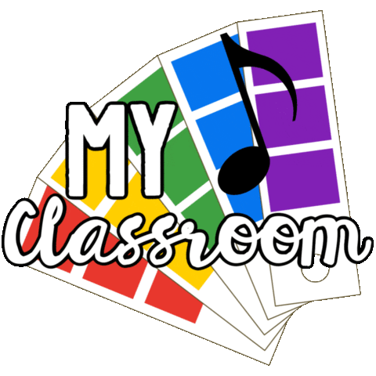

Music in Schools
Why is Music in Schools Important
Music is Beneficial for Student Growth.
As science has proven, Music is beneifical to the way students learn, concentrate, and focas. That being said, if student are exposed to Music in School, test results will be higher and better.
Students are Exposed to World-wide Cultures and Traditions.
In Music class, students sing and play songs from all across the world. Students learn words in new languges, and play instuments native to other nations. Students get a little taste of different cultures,andget to experience it all in Music Class!
Students get Additional knowledge on basic School Subjects.
As we know music is more complex than people realize. Music brings so many other school subjects togethor, Math, Science, Social Studies, History and Physics (to name a few). In music class students will get to experience all of this in one lesson, and having fun while learing it as well.
<
